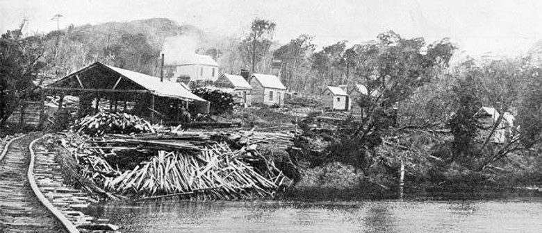

A brief history of Stewart Island

Rakiura Stewart Island boasts a rich and multifaceted history that reflects the diverse narratives of its inhabitants. Archaeological evidence suggests that the island has been visited and inhabited by Māori since the 1200s. The island's dense forests and rich marine life have provided tākata whenua with fish, birds, and plant resources for centuries. Today, Rakiura continues to serve as a key site for seasonal fishing and gathering for Māori.
The first European explorers of Rakiura visited in 1770 when Captain James Cook sailed around the region. It was during this journey that Cook and his crew documented the lush landscape, which sparked interest in the natural resources available on the island.
Throughout the 1800s, Rakiura began to evolve with the influx of European settlers. It transformed into a key location for whaling and fishing, due to its strategic position and rich waters. By the late 1800s, the island saw the establishment of small settlements, most notably Oban, which remains the island's primary township today. Whaling stations and fishing camps sprang up, drawing laborers and traders eager to partake in the lucrative industries.
Timber milling was important from the 1860s until the 1930s. In 1864 three sawmills operated on the north side of Paterson Inlet. The main areas milled were the taller stands in sheltered bays of Paterson Inlet/Whaka ā Te Wera and bays along the north-east coast.
Newspapers featured frequent reports of mineral finds on Stewart Island in the later 19th century. Tin Range at Port Pegasus is named for the tin that saw a short-lived tin rush in the late 1880s. Sporadic prospecting continued in the range up until the 1930s, but it was never a rich deposit.
Over the years, the historical significance of Rakiura Stewart Island has continued to evolve. The decline of the whaling industry in the early 1900s led to a shift toward tourism and conservation efforts. Today, the island serves as a gateway to pristine wildlife and natural beauty, attracting visitors keen on experiencing its unique environmental heritage. Understanding the historical context of Rakiura Stewart Island enriches the visitor experience, shedding light on its enduring cultural legacy and the evolution of its communities.
Rakiura Stewart Island is known by both Māori and English names. The Māori name, 'Rakiura,' refers to the red sunrises, sunsets, and aurora that light up the sky above the Island each morning and night, which connects to a traditional narrative about a chief named Te Rakitamau. The English name 'Stewart Island' was given to the island after William W. Stewart, the first mate of the sealing ship Pegasus, who charted the island's southeastern harbour (Port Pegasus) in 1809.
Stewart Island NZ. (2021, June 5). About Stewart Island: A brief history of Stewart Island. Stewart Island NZ. https://stewartislandnz.com/about/